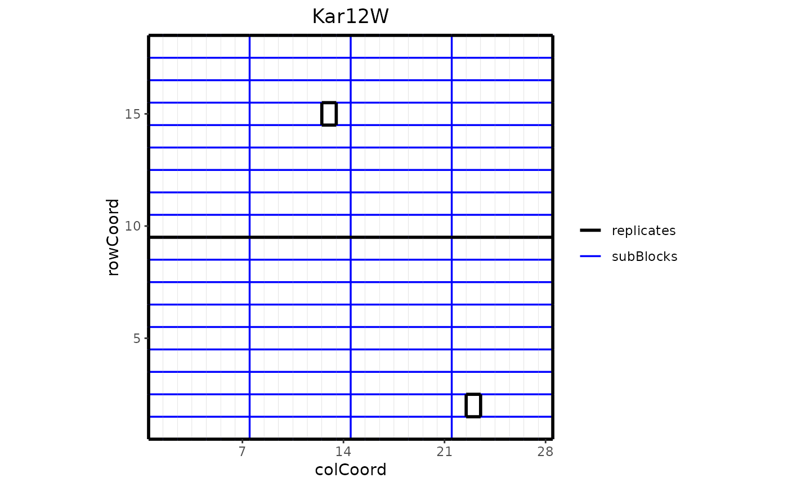
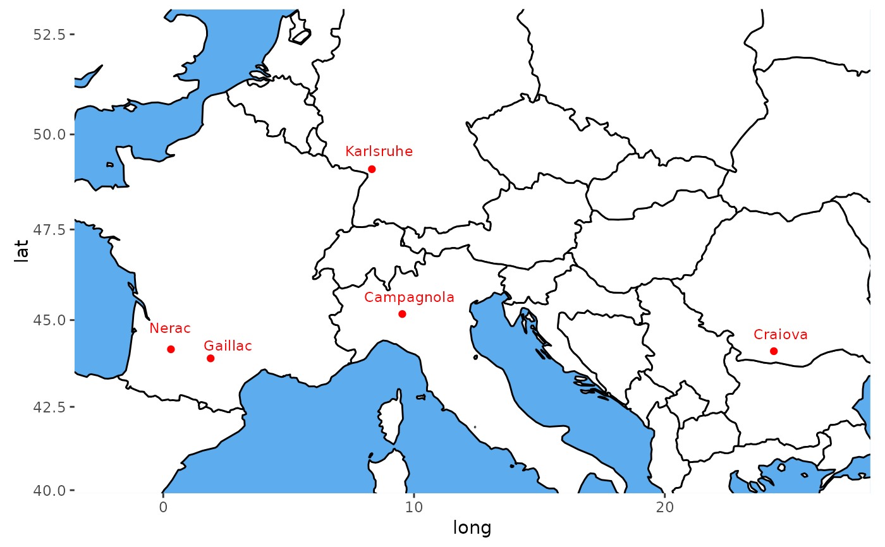
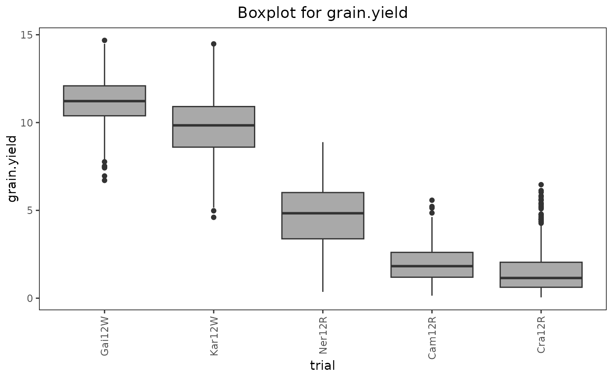
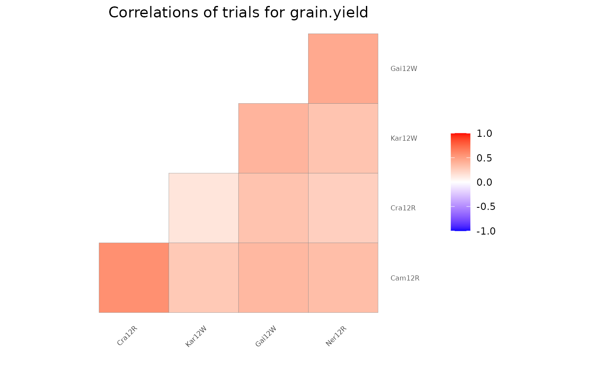

Plotting function for objects of class TD. Plots either the layout of the different trials within the TD object or locates the trials on a map. Also a boxplot can be made for selected traits and trials, a plot of correlations between trials and a scatter plot matrix. A detailed description and optional extra parameters of the different plots is given in the sections below.
Arguments
- x
An object of class TD.
- ...
Extra plot options. Described per plotType in their respective section.
- plotType
A single character string indicating which plot should be made. See the sections below for a detailed explanation of the plots.
- trials
A character vector indicating which trials to include in the plot.
- traits
A character vector indicating for which traits a plot should be made. Ignored if
plotType= "map".- title
A character string used a title for the plot. Note that when a title is specified and multiple plots are created, all plots will get the same title.
- output
Should the plot be output to the current device? If
FALSEonly a list of ggplot objects is invisibly returned.
Layout Plot
Plots the layout of the selected trials.
This plot can only be made for trials that contain both row (rowCoord)
and column (colCoord) information. If either one of those is missing
the trial is skipped with a warning. If blocks (subBlock) are
available for a trial these can be colored in different colors per block by
setting colorSubBlock = TRUE. If replicates (repId) are
available a black line is plotted between different replicates. Missing plots
are indicated in white. These can either be single plots in a trial or
complete missing columns or rows.
Extra parameter options:
- showGeno
Should individual genotypes be indicated as text in the plot? Defaults to
FALSE- sizeGeno
The text size for indicating individual genotypes. Defaults to 2. Ignored if
showGeno = FALSE.- highlight
A character vector of genotypes to be highlighted in the plot.
- colHighlight
A character vector specifying colors to use for the highlighted genotypes. If not specified, default ggplot colors are used.
- colorSubBlock
Should blocks be colored with a different color per subBlock? Defaults to
FALSE.colorSubBlockis ignored when highlight is used to highlight genotypes.- colSubBlock
A character vector specifying colors to use for the subBlocks. If not specified, default ggplot colors are used.
Map Plot
A map is plotted with the locations of the trials in the TD object.
Mapping the trials is done based on latitude and longitude that can be
added when creating an object of class TD. Trials for which either latitude
or longitude is not available are skipped with a warning message.
The countries in which the trials are located will be plotted on a single
map and the location of the trials will be indicated on this map. The
actual plot is made using ggplot, but for getting the data for the borders
of the countries the maps package is needed.
Extra parameter options:
- colorTrialBy
A character string indicating a column in
TDby which the trials on the map are colored.- colTrial
A character vector with plot colors for the trials. A single color when
colorTrialBy = NULL, a vector of colors otherwise.- printTrialNames
Should trial names be printed. Defaults to
TRUE. Setting this toFALSEcan be useful if there are many trials.- minLatRange
A positive numerical value indicating the minimum range (in degrees) for the latitude on the plotted map. Defaults to 10.
- minLongRange
A positive numerical value indicating the minimum range (in degrees) for the longitude on the plotted map. Defaults to 5.
Box Plot
Creates a boxplot per selected trait grouped by trial. Extra parameter options:
- groupBy
A character string indicating a column in
TDby which the boxes in the plot should be grouped. By default the boxes are grouped per trial.- colorTrialBy
A character string indicating a column in
TDby which the boxes are colored. Coloring will be done within the groups indicated by thegroupByparameter.- colTrial
A character vector with plot colors for the trials. A single color when
colorTrialBy = NULL, a vector of colors otherwise.- orderBy
A character string indicating the way the boxes should be ordered. Either "alphabetic" for alphabetical ordering of the groups, "ascending" for ordering by ascending mean, or "descending" for ordering by descending mean. Default boxes are ordered alphabetically.
Correlation Plot
Draws a heat map of correlations between trials per selected trait. If genotypes are replicated within trials genotypic means are taken before computing correlations. The order of the trials in the heat map is determined by clustering them. Closely related trials will be plotted close to each other.
Scatter Plot
Draws a scatter plot matrix per selected trait. If genotypes are replicated
within trials genotypic means are taken before plotting. The lower left of
the matrix contains scatter plots between trials. The diagonal contains
histograms of the data per trial.
Extra parameter options:
- colorGenoBy
A character string indicating a column in
TDby which the genotypes in the scatter plots are colored.- colGeno
A character vector with plot colors for the genotypes. A single color when
colorGenoBy = NULL, a vector of colors otherwise.- colorTrialBy
A character string indicating a column in
TDby which the trials in the histograms are colored.- colTrial
A character vector with plot colors for the trials. A single color when
colorTrialBy = NULL, a vector of colors otherwise.- trialOrder
A character vector indicating the order of the trials in the plot matrix (left to right and top to bottom). This vector should be a permutation of all trials plotted.
- addCorr
A character string indicating the position of the correlation between trials displayed in each plot, either "tl" for top left, "tr", for top right, "bl" for bottom left or "br" for bottom right. If
NULL, the default, then no correlation is added to the plot.
See also
Other functions for TD objects:
TD,
getMeta(),
summary.TD()
Examples
data("dropsRaw")
## Create a TD object.
dropsTD <- createTD(data = dropsRaw[dropsRaw$year == 2012, ],
genotype = "Variety_ID",
trial = "Experiment",
loc = "Site",
repId = "Replicate",
subBlock = "block",
rowCoord = "Row",
colCoord = "Column",
trLat = "Lat",
trLong = "Long")
### Layout plot.
# \donttest{
## Plot the layout of one of the trials.
plot(dropsTD,
trials = "Kar12W")

## Highlight some of the genotypes in the layout.
plot(dropsTD,
trials = "Kar12W",
highlight = c("A3", "11430"))
### Map plot.
## Plot the location of the trials on the map.
plot(dropsTD,
plotType = "map")

### Box plot.
## Create a box plot for grain.yield.
plot(dropsTD,
plotType = "box",
traits = "grain.yield")
## Add coloring by scenarioFull to the boxes.
plot(dropsTD,
plotType = "box",
traits = "grain.yield",
colorTrialBy = "scenarioFull")
## Sort the boxes in descending order.
plot(dropsTD,
plotType = "box",
traits = "grain.yield",
orderBy = "descending")

### Correlation plot.
## Plot the correlations between trials for grain.yield.
plot(dropsTD,
plotType = "cor",
traits = "grain.yield")

### Scatter plot
## Plot scatter plot for grain.yield.
plot(dropsTD,
plotType = "scatter",
traits = "grain.yield")
 ## Create a scatter plot matrix for grain yield.
## Color trials by scenario and genotypes by family.
plot(dropsTD,
plotType = "scatter",
traits = "grain.yield",
colorTrialBy = "scenarioFull",
colorGenoBy = "geneticGroup")
# }
## Create a scatter plot matrix for grain yield.
## Color trials by scenario and genotypes by family.
plot(dropsTD,
plotType = "scatter",
traits = "grain.yield",
colorTrialBy = "scenarioFull",
colorGenoBy = "geneticGroup")
# }